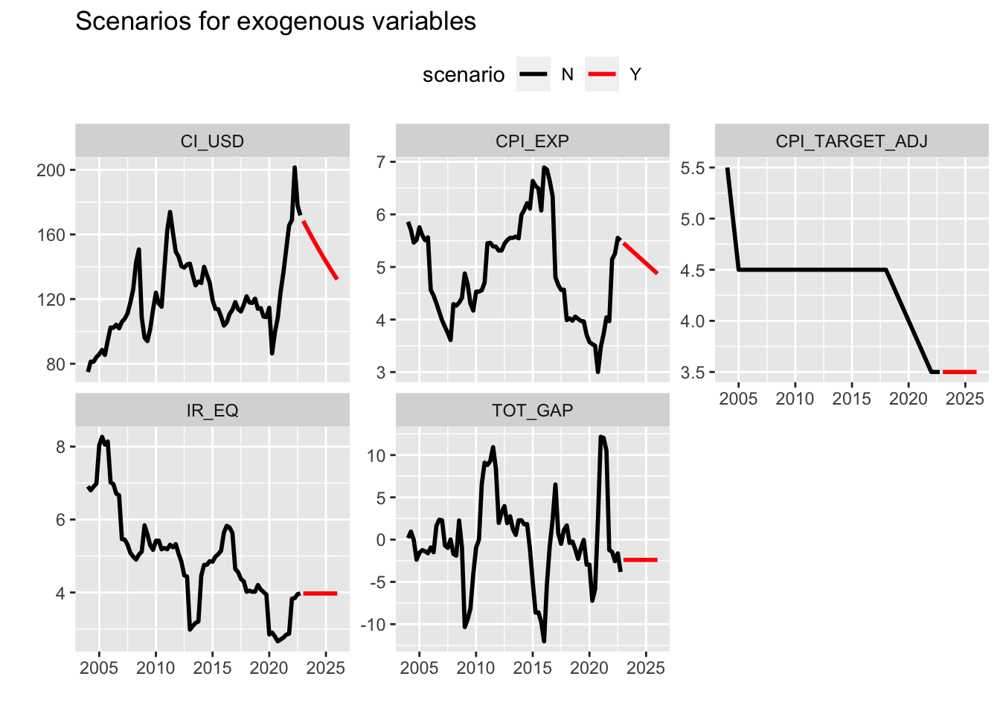
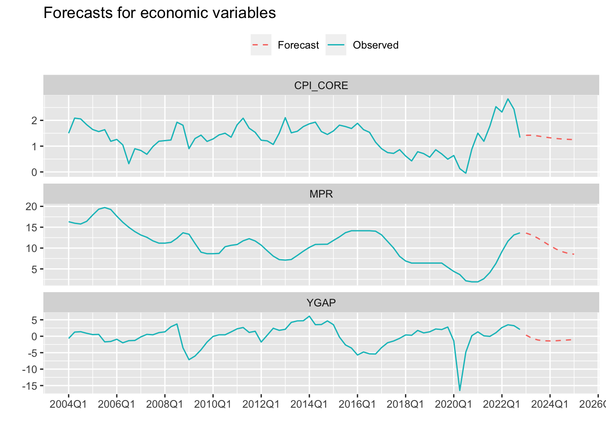

model_spec <- "
MODEL
COMMENT> IS Curve
BEHAVIORAL> YGAP
TSRANGE 2005 1 2022 4
EQ> YGAP = b1*TSLAG(YGAP,1) + b2*TSLAG((MPR- CPI_EXP - IR_EQ),1) + b3*TOT_GAP
COEFF> b1 b2 b3
COMMENT> Phillips Curve
BEHAVIORAL> CPI_CORE
TSRANGE 2005 1 2022 4
EQ> CPI_CORE = b4*TSLAG(CPI_CORE,1) + b5*CPI_EXP + b6*(TSDELTALOG(CI_USD)) + b7*TSLAG(YGAP,1)
COEFF> b4 b5 b6 b7
RESTRICT> b4+b5+b6=1
COMMENT> Monetary Policy Rule
BEHAVIORAL> MPR
TSRANGE 2005 1 2022 4
EQ> MPR = b8*TSLAG(MPR,1) + b9*TSLAG(MPR,2) + b10*(CPI_EXP - CPI_TARGET_ADJ) + b11*(IR_EQ + CPI_TARGET_ADJ)
COEFF> b8 b9 b10 b11
RESTRICT> b8+b9+b10=1
END
"13 Multiple equations model
Essential tools for modern economic analysis
In the previous section, we saw how to estimate single equations to analyze the effect of exogenous variables on the outcome. However, economic relationships are often treated as a system of endogenous variables. This kind of framework allows us to analyze the effect of each variable on the whole system and the resulting feedbacks.
For example, interest rate hikes are expected to lower inflation through their contractionary impact on economic activity. In addition, the more restrictive monetary policy stance should lead to an appreciation of the exchange rate through greater capital inflows – this is especially true for emerging markets. In the Phillips Curve we saw in the previous section, all these links were present but implicit. We could make all these links explicit by creating specific equations for both the exchange rate and capital inflows. In summary, working with systems of endogenous equations makes it possible to greatly expand the scope of the analysis by incorporating any conceived relationship.
This can be cumbersome to do manually, but it becomes quite simple with the bimets package. It provides a very concise and friendly interface to write down the whole system of equations, estimate its parameters and forecast based on scenarios for the exogenous variables. Those who want to delve deeper into all the features available in the package can refer to the vignette. For the purpose of this section, it will suffice to present a variation of the standard three-equation macroeconomic model composed of an IS curve, a Phillips Curve and a Monetary policy rule. The model is described as follows.
The IS curve relates the output gap to its own lag, the deviation of the real ex-ante interest rate from its equilibrium and the deviation of the terms of trade from its trend.
\[ \tilde{y_t} = \beta_1\tilde{y}_{t-1} + \beta_2(i_t - \pi^{e}_{t,t+4|t} - i^{eq}_t)_{t-3} + \beta_3\tilde{ToT}_t + \epsilon^{\tilde{y}}_t \] The Phillips Curve is the same from the previous section and relates the core CPI to its own lag, the expectation for the next twelve months, the percentage change in imported prices and output gap.
\[ \pi_t = \beta_4\pi_{t-1} + \beta_5\pi^{e}_{t,t+4|t} + (1-\beta_4 - \beta_5)\Delta e_{t-1} + \beta_7\tilde{y}_{t-1} + \epsilon_t^{\pi} \] Lastly, the monetary policy rule relates the nominal interest rate to its own lags, the deviation of expected inflation from the target and the nominal equilibrium rate.
\[ i_t = \beta_8i_{t-1} + \beta_9i_{t-2} + (1-\beta_8-\beta_9)(\pi^{e}_{t,t+4|t} - \bar{\pi_t}) + \beta_{11}(i_t^{eq} + \bar{\pi}_t) + \epsilon_t^{i} \] The first step is to write down the system of equations according to the standard adopted by the package. A careful look at the equations blocks below should be enough to understand how they work.
The next step is to load the model specification and the data. The data must be supplied as a list of time series objects (ts).
library(tidyverse)
library(bimets)
br_economy_data <- readRDS('data/ch13_br_economy_data.rds')
macro_model <- LOAD_MODEL(modelText = model_spec)Analyzing behaviorals...
Analyzing identities...
Optimizing...
Loaded model "model_spec":
3 behaviorals
0 identities
11 coefficients
...LOAD MODEL OKmodel_data_ts <- br_economy_data %>%
pivot_longer(-date, names_to = 'var', values_to = 'value') %>%
plyr::dlply(
.variables = 'var',
.fun = function(x){
TIMESERIES(x$value, START = c(2004,1), FREQ = 4)
}
)
macro_model <- LOAD_MODEL_DATA(
macro_model,
model_data_ts
)Load model data "model_data_ts" into model "model_spec"...
...LOAD MODEL DATA OKAt this point we are ready to estimate the model coefficients. By default the equations are estimated using OLS, but it’s also possible to use Instrumental Variables (IV). I used quietly = TRUE to suppress the model output print because it’s lengthy. But I do recommend you to take a glance at it by setting this argument to FALSE or by removing it altogether.
model_fit <- ESTIMATE(
macro_model,
estTech = 'OLS',
quietly = TRUE
)Finally, we can use our estimated model to produce forecasts for future values. For this, we first need to provide future values for the exogenous variables. The TSEXTEND function makes this process very simple by providing several ways to extend the time series of the exogenous variables. In the example below, I made different assumptions to illustrate some of the possibilities.
For example, I assumed that both the CPI target and the equilibrium real interest rate will remain constant; the expectations for CPI will evolve according to a linear trend; the gap of terms of trade will decrease by 2.4% each quarter, which is the mean of the last four quarters; and the imported prices will decrease 2% each quarter, partially reverting the surge of the last years.
model_fit$modelData <- within(
model_fit$modelData, {
CPI_TARGET_ADJ = TSEXTEND(CPI_TARGET_ADJ, UPTO=c(2026,1),EXTMODE='CONSTANT')
CPI_EXP = TSEXTEND(CPI_EXP, UPTO=c(2026,1),EXTMODE='LINEAR')
CI_USD = TSEXTEND(CI_USD, UPTO=c(2026,1),EXTMODE='MYRATE', FACTOR = (1-0.02))
IR_EQ = TSEXTEND(IR_EQ, UPTO=c(2026,1),EXTMODE='CONSTANT')
TOT_GAP = TSEXTEND(TOT_GAP, UPTO=c(2026,1),EXTMODE='MYCONST', FACTOR = -2.4)
}
)We can convert this object into tidy format in order to make it easier to plot all the extended time series in a single panel.
Show the code
do.call(ts.union, model_fit$modelData) %>%
timetk::tk_tbl() %>%
pivot_longer(-index, names_to = 'var', values_to = 'value') %>%
filter(!var %in% c('CPI_CORE', 'YGAP', 'MPR')) %>%
mutate(scenario = if_else(index >= '2023 Q1', 'Y', 'N')) %>%
ggplot(aes(x = index, y = value, color = scenario)) +
geom_line(lwd = 1) +
scale_color_manual(values = c('black', 'red')) +
facet_wrap(~ var, scales = 'free_y') +
theme(legend.position = 'top') +
zoo::scale_x_yearqtr(n = 5, format = '%Y') +
labs(
title = 'Scenarios for exogenous variables',
x = '',
y = ''
)
In the last step we call the SIMULATE function. Again, with a few lines of code we can transform the output into tidy format to produce a prettier plot.
model_sim <- SIMULATE(
model_fit,
simType = 'FORECAST',
TSRANGE = c(2023,1,2025,1),
simConvergence = 0.00001,
simIterLimit = 100,
quietly = TRUE
)Show the code
output <- do.call(ts.intersect, model_fit$modelData) %>%
timetk::tk_tbl(rename_index = 'date') %>%
mutate(type = 'Observed') %>%
bind_rows(
do.call(ts.intersect, model_sim$simulation[1:3]) %>%
timetk::tk_tbl(rename_index = 'date') %>%
mutate(type = 'Forecast')
) %>%
mutate(date = zoo::as.yearqtr(date))
output %>%
select(date, YGAP, CPI_CORE, MPR, type) %>%
pivot_longer(-c(date, type), names_to = 'var', values_to = 'value') %>%
ggplot(aes(x = date)) +
geom_line(aes(y = value, color = type, linetype = type)) +
scale_linetype_manual(values = c(2,1)) +
zoo::scale_x_yearqtr(n = 10, format = '%YQ%q') +
facet_wrap(~ var, scales = 'free_y', nrow = 3) +
theme(legend.position = 'top') +
labs(
title = 'Forecasts for economic variables',
x = '',
y = '',
linetype = '',
color = ''
)